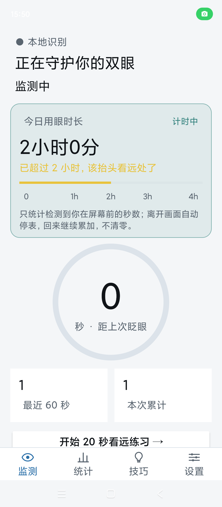
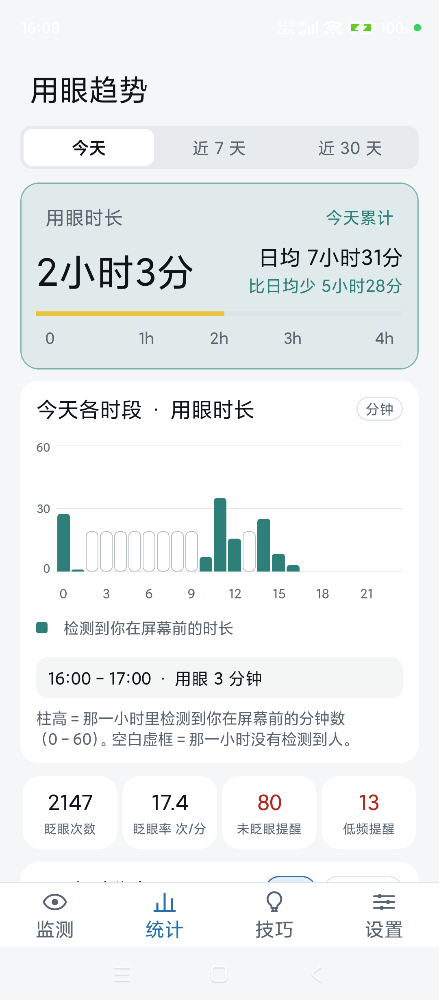
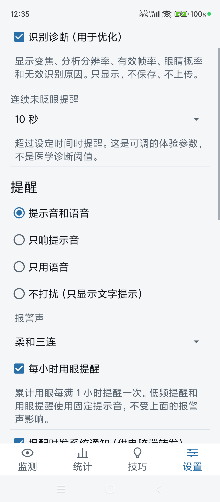

用前置摄像头在手机本地识别你的完整眨眼。盯屏太久没眨眼，就响一声、说一句「眨眨眼」；同时记下你每天真实的用眼时长，看久了该歇时提醒你。不是医疗器械，不产出健康评分。
从数眨眼到分级提醒，再到每天的用眼时长与用眼趋势，一条完整闭环，全部在手机本地完成。
只有「闭眼—睁开」才算一次，短暂跳变不计数；一只眼识别不到时，用另一只眼兜底。
超过阈值没眨眼就提醒（默认 10 秒，可选 5/10/15/20 秒）；最近 60 秒眨眼少于 8 次时再给一次低频提醒；用眼每满 1 小时给一次安静的整点提醒。三者各有不同的颜色、声音与语气。
提示音、中文语音「眨眨眼」、静音文字通知三种方式可选，也能组合；提醒之间有冷却，不会连续轰炸。
提醒分布按今天 24 小时、近 7 天与近 30 天看，未眨眼与低频提醒叠在同一根柱子上，另有 KPI 卡与占比环；用眼时长单独一张图，只统计镜头里有一张朝屏幕的脸的时间，离开画面自动停表。
4 条带来源标签的护眼技巧，配「今天已尝试 x/4」进度与 20 秒远眺计时练习。
分析画面最高 1280×960，支持 1.0/1.2/1.5× 变焦；30–40° 侧看时按较闭合的那只眼判断。
真机截图。


